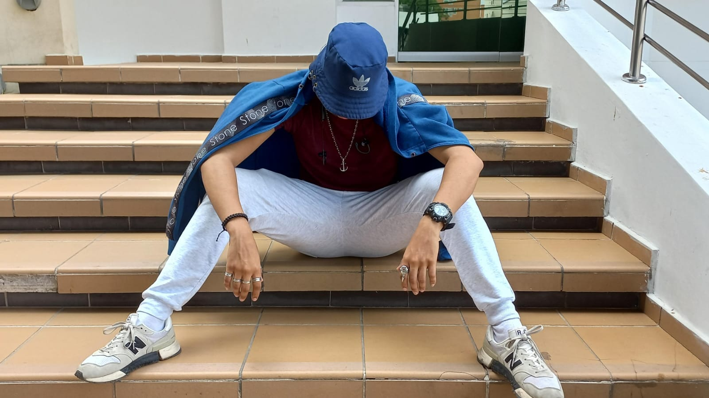

¡Hola! Soy Leonardo Avendaño, tengo 19 años y soy un apasionado del diseño gráfico y el dibujo. Mi principal objetivo es aprovechar mi creatividad, imaginación y habilidades para desarrollar proyectos tanto propios como colaborativos que destaquen por su originalidad y valor artístico. Este sitio web no es un portafolio cualquiera. Es un espacio donde comparto mis trabajos como diseñador gráfico, con la intención de inspirar a estudiantes, creativos y cualquier persona interesada en el diseño. Al mismo tiempo, busco conectar con emprendedores y clientes potenciales que deseen llevar sus ideas al siguiente nivel con diseños únicos y funcionales. Mi historia Mi interés por el diseño comenzó en la etapa del bachillerato, cuando descubrí mi pasión por el dibujo y la creatividad visual. Esto me llevó a tomar la decisión de estudiar diseño gráfico, carrera que actualmente estoy cursando. Desde entonces, he participado en diversos proyectos tanto individuales como en equipo, explorando distintas facetas del diseño. Algunos de mis trabajos destacados incluyen: Una revista y un póster dedicados a la famosa diseñadora Jessica Walsh. Ilustraciones para cubiertas de libros, como El que susurraba en la oscuridad de H.P. Lovecraft. Diseños de logos para proyectos familiares y de amigos. Y más recientemente, una carta tipo restaurante para el negocio de un amigo de la infancia. Ilustración de personajes y/o fondos animados. Gif de un cartel social Mi estilo Mi estilo personal es atrevido y adaptivo. En el dibujo, suelo experimentar con proporciones y perspectivas que resaltan la audacia de mis ideas. Sin embargo, como diseñador, me destaco por mi capacidad de adaptarme a las necesidades y objetivos de cada proyecto, siempre agregando un toque único de mi creatividad. ¿A quién está dirigido este sitio? Estudiantes de diseño y creativos: Quiero que este espacio sirva de inspiración, mostrando cómo las ideas pueden tomar forma en proyectos digitales o ilustrativos. Emprendedores: Si necesitas mejorar la imagen de tu marca o material publicitario, aquí podrás ver cómo mi trabajo puede marcar la diferencia en tus proyectos.
